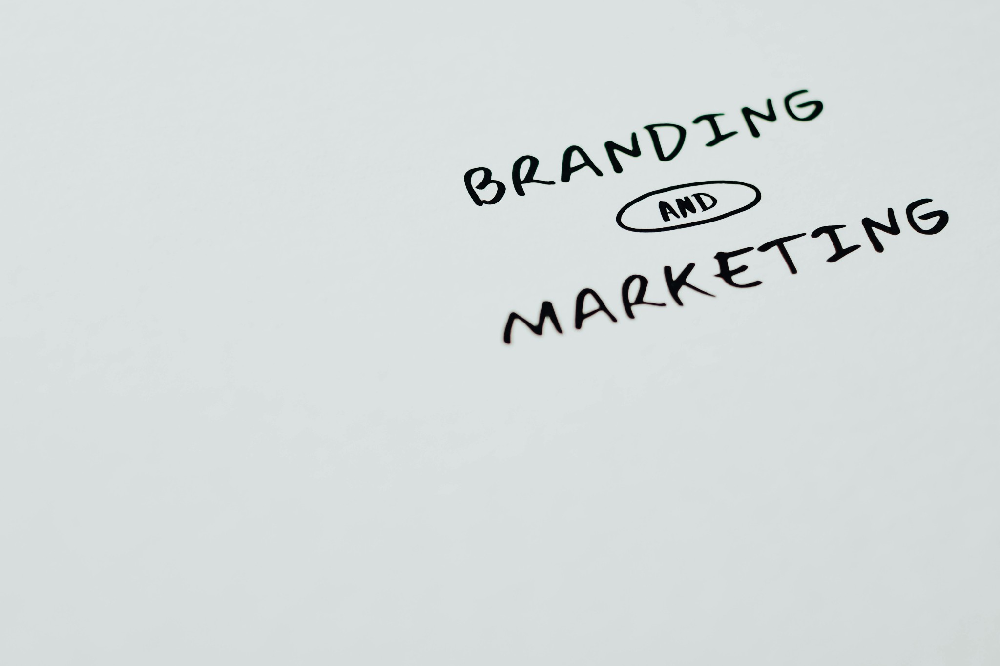

Ranking Isn't the Finish Line
You've fixed NAP, built service pages, optimized your Google Business Profile, and started ranking. Traffic is up. Clicks are up. But calls and jobs? Not as much as you expected.
That's common. Ranking gets you in front of people. Converting them—turning clicks into calls, form fills, and jobs—depends on what happens after they land. Your site, your GBP listing, and your phone handling all matter. Different types of keywords bring different intents. Transactional searchers ("emergency plumber near me") are ready to call. Informational searchers ("signs water heater is failing") may need more before they pick up the phone. Both can convert—if your site and process are set up for it.
Make It Easy to Contact You
The most obvious fix: make the phone number easy to see and tap. On mobile, which is where most home service searches happen, the number should be visible above the fold and clickable (tap-to-call). Don't hide it in the footer or behind a menu. Same for the contact form—keep it simple. Name, phone, message. Requiring too many fields reduces submissions.
On your Google Business Profile, the "Call" button is prominent. But if someone clicks through to your website, they shouldn't have to hunt. A plumber whose homepage loads with a clear "Call Now" button and phone number converts better than one whose number is buried in a 12-item footer. Clear, conversion-focused design isn't optional—it's how you turn traffic into calls.
Answer the Questions That Brought Them There
When someone lands on "AC Repair Dallas," they want to know: What do you do? How fast can you get here? How do I get a quote? If the page is vague—"We provide HVAC services"—or buried in generic marketing copy, they bounce. Answer the question in the headline and first paragraph. Include clear next steps: Call, Request Service, Get a Quote.
For informational content—"5 Signs Your Water Heater Is Failing"—the reader is in research mode. They may not call today. But they might call when the water heater fails. End the article with a soft CTA: "If you're seeing these signs, we can help. Call for a free inspection." Link to the relevant service page. Over time, that content ranks, builds trust, and drives calls when the reader is ready. For more on why that content matters, see our local SEO guide.
Answer the Phone
You can have the best rankings and the clearest site—and still lose jobs if no one answers. Home service customers often call 3–5 businesses. The first one to answer and sound competent gets the job. If you miss the call, they move on. Use a professional answering service or ensure someone answers during business hours. After-hours, use voicemail that sets expectations ("We'll return your call within 30 minutes") and actually follow through.
Bottom Line
Ranking brings visibility. Converting brings jobs. Make the phone number and contact path obvious. Answer the questions that brought people to the page. Answer the phone. The contractors who do all three turn traffic into calls and calls into jobs. The ones who only focus on ranking leave money on the table. Fast-growing towns like Melissa reward the same discipline: if organic or Google Ads sends traffic to a confusing page, you still lose the job.